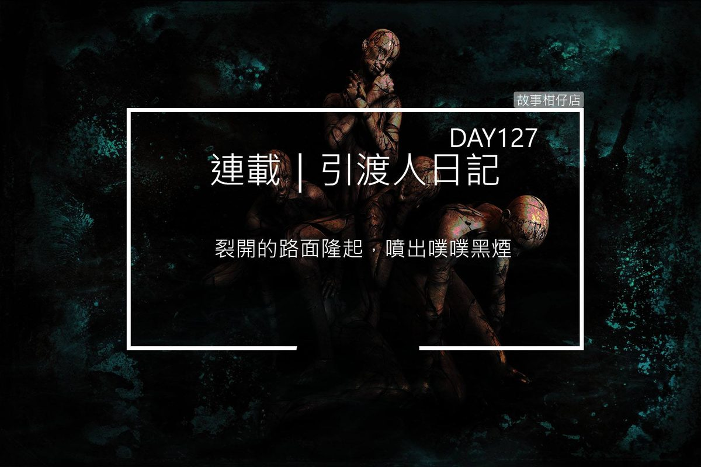

引渡人日記 day 127 （中）十字路口

救護車警笛聲、汽機車喇叭聲響個不停，有人幹譙，有人湊熱鬧，有人狂念阿彌陀佛。混亂吵雜的十字路口，七色鬼正朝平頭男亡魂步步逼近，我離他只有幾步遠，卻不敢輕舉妄動。
「唰」地一聲，黑哥白姐凌空跳下，弓步擋在亡魂面前。
「李勇！保護亡魂！」黑哥大喊，邊摘下草帽。他掌貼帽頂，臂直如劍，秒秒出手，乘風順勢，帽沿頓時化為彎刀，割破七色鬼的臉皮毛髮，一時間，厲鬼嚎叫遍野。
「嘿嘿嘿！好過癮！來！再來呀！」藍鬼舔著嘴角，一臉饞相。
「這老黑鬼怎麼可以打我們，好傷心啊！嗚嗚！」黃鬼嚎啕大哭。
「都是你不好！惹三哥難過！」靛鬼伸出手，其他六色鬼群起效尤勾起臂膀，將我們團團包圍在中間。
真荒唐，我們這已經在打第三次世界大戰，周遭的人卻完全不知道。救護人員從撞得碎糊糊的車頭拖出駕駛，蓋上白布送上救護車，旁邊看熱鬧的還拿手機拍個不停。幹，撞死人有啥好拍！
亡魂呆呆看著這一切，肯定還沒反應過來白布下的屍體就是他。我握緊黑傘，準備抓緊時機就要收魂。
黑哥戴妥草帽，理理衣領，向白姐使了個眼色，紮穩馬步，一左一右划開雲手，混沌生風，借霧取露，如電如雷，彷彿天地倒轉，日夜交錯，兩道黑白光束橫空射出，轟得七色鬼往四面八方飛去，倒地不起。
哇靠！真他媽威風，別說七色鬼，我也不小心被震到一旁的人行道。這一幕看得我都傻了，差點忘記保護亡魂的任務。
「這種貨色也敢端出來。呸！」白姐正要拘住亡魂，卻又倏地轉身張望四處，眉頭一皺，大喊一聲：「糟！」
以十字路口為中心，七色鬼兩兩一組分踞東北方「生門」、西北方「開門」、東南方「杜門」。
奇怪的是，只有黃鬼孤零零杵在西南方「死門」痛哭，哭得好像他家出代誌。
「小心！他們要召喚狂鬼！」
黑哥話還沒說完，「死門」處的柏油路突然綻開裂縫，一路裂到十字路口，又蔓延到其他三個方位。黃鬼還在哭衰，其他六色鬼或怒或笑，或癲或迷，又叫又跳，簡直一群瘋子。
裂開的路面隆起，噴出噗噗黑煙，那煙有夠三八，扭扭彎彎往四周飄散，一下子去勾黑哥的草帽，一下子去撩白姐的洋裝。漸漸地，那黑煙像樹一樣，長出無數根枝，沒多久時間便鋪天蓋地，讓人以為整個世界停了電。
阿娘喂，這到底是什麼情形，害我完全看不到路，只聽得見七色鬼在那夭飽吵，幹！
正當我想著呢，眼前黑幕竟被一分為二俐落分開，原來是白姐持羽扇劈天裂地一斬，才還了這世界光明。
但事情沒有這麼簡單。
從那逐漸散去的黑煙當中，有個人影浮現，脖子、肩膀很不自然地痙攣起來。
那人頂著大光頭，身披鮮紅衣料，打著赤腳，雙耳戴著小趾骨串成的長耳環。
我瞇起眼想看清他的模樣，他居然像是看穿我心思般轉過身來，我驚訝得一句話都說不出來。
她是個女人。即使沒有頭髮，卻是個非常非常漂亮的女人，絲毫不輸白姐。眉毛好像剃掉了，露出青青的皮膚，唇中央點著鮮紅色料，一雙細長鳳眼，深得像我老家外的那口井。
女人歪斜著脖子，勾著舌尖朝我笑，身體抽搐，耳環隨之發出喀啦喀拉響。
這才發現，她的光頭點了六個戒疤。
這女人究竟是什麼？人？神？佛？還是妖？
「李勇！別看她眼睛，她是狂鬼！」
黑哥的聲音傳來，卻讓我覺得好遠好遠。
狂鬼，原來是個女人？